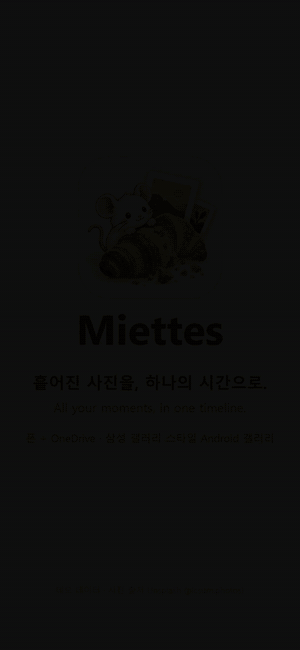
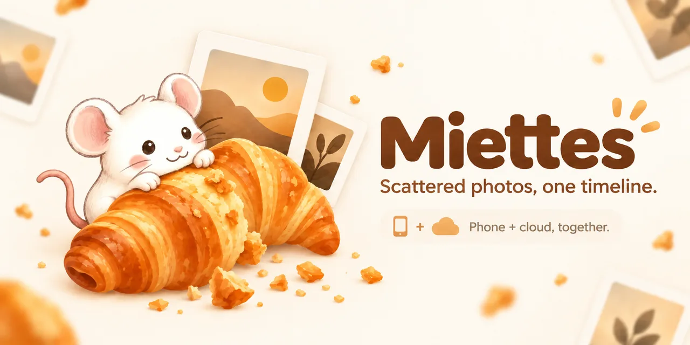

손에 익은 경험 그대로
One UI 느낌의 탭과 큰 제목, 핀치로 2~12칸 확대·축소, 길게 눌러 끌어서 선택, 위로 쓸어올리는 상세정보까지 삼성 갤러리의 동작을 따라가요. 편집을 누르면 삼성 사진·동영상 편집기가 바로 열리고, 백업 폴더도 삼성이 쓰던 사진/삼성 갤러리를 그대로 써요.
삼성 갤러리 OneDrive 동기화가 끝난 뒤를 위한 갤러리
폰에 있는 오늘의 사진과 OneDrive에만 남은 몇 년 전 사진을 하나의 타임라인으로 보여 드려요. 사진이 폰에 있든 클라우드에 있든 신경 쓸 필요 없이, 쓰던 삼성 갤러리처럼 열어 보시면 돼요.

관심 가져주셔서 정말 감사합니다.이 페이지까지 와 주신 것만으로도 큰 힘이 됩니다. Miettes는 제가 매일 쓰려고 만든 갤러리예요. 같은 불편을 겪는 분들께도 도움이 되면 좋겠다는 마음으로 공개합니다.
크로아상생쥐 (Croissant Mouse) 드림
이름의 뜻
Miettes(미에뜨)는 프랑스어로 ‘부스러기들, 작은 조각들’이라는 뜻이에요. 크루아상을 먹고 남은 부스러기처럼, 사진도 일상에서 떨어져 나온 작은 순간과 기억의 조각이라고 생각했어요.
2026년 9월 30일, 삼성 갤러리의 OneDrive 동기화가 끝났습니다. 그날부터 OneDrive에만 있던 옛날 사진은 갤러리에서 사라지고, 클라우드 사진은 OneDrive 앱을 따로 열어야 볼 수 있게 됐죠. 폰 용량이 부족해 모든 사진을 폰에 둘 수도 없고요.
그래서 바란 건 하나였어요. 어제까지 쓰던 삼성 갤러리를 아무 일 없던 것처럼 계속 쓰는 것.

제가 지키고 싶었던 것
One UI 느낌의 탭과 큰 제목, 핀치로 2~12칸 확대·축소, 길게 눌러 끌어서 선택, 위로 쓸어올리는 상세정보까지 삼성 갤러리의 동작을 따라가요. 편집을 누르면 삼성 사진·동영상 편집기가 바로 열리고, 백업 폴더도 삼성이 쓰던 사진/삼성 갤러리를 그대로 써요.
클라우드 사진은 클라우드에 둔 채로 봐요. 폰에는 썸네일만 캐시하고(최대 1GB, 오래된 것부터 자동 정리), 원본은 볼 때만 불러오거나 스트리밍합니다.
올린 파일은 OneDrive의 해시와 비교해 똑같이 올라갔는지 확인해요. 기기 공간 확보는 확인이 끝난 사진만 지우고, 처음에는 꺼져 있어요. 삭제한 사진은 휴지통에서 30일 동안 되살릴 수 있고, 한꺼번에 너무 많이 사라지면 삭제를 멈추는 안전장치도 있어요.
별도 서버가 없어요. 폰이 Microsoft 공식 API와 직접 통신하고, 로그인은 Microsoft 로그인 창에서 합니다. 제가 사진이나 계정 정보를 받아 보는 구조가 아니에요.
이런 걸 할 수 있어요
폰 사진과 OneDrive 사진을 날짜순으로 합치고, 같은 사진은 하나로 보여줘요.
백업됨, 기기에만, 클라우드에만, 업로드 대기, 실패를 아이콘과 필터로 구분해요.
새 사진을 OneDrive에 올리고, 큰 파일은 이어 올려요. 기기에서 수정한 사진은 같은 파일로 바꿔 올려요.
사진도 동영상도 삼성 편집기로 바로 열려요. OneDrive에만 있는 사진은 원본을 받아서 넘겨줘요.
N년 전 오늘, 사진이 많은 날과 여행을 자동으로 묶어 보여줘요.
파일 이름, 날짜(2024, 2024.5, 5월), 앨범, 동영상, 즐겨찾기, GIF로 찾아요.
영상은 앱 안에서 재생되고, 클라우드 영상은 받지 않고 바로 스트리밍해요. 모션 포토와 GIF도 움직여요.
클라우드 사진도 여러 장을 한 번에 공유할 수 있어요. 앨범, 휴지통, 스크린샷·중복·큰 동영상 정리도 있어요.
설치와 처음 설정
사진/삼성 갤러리, 사진/카메라 앨범이고, OneDrive가 영어라면 Pictures/Samsung Gallery, Pictures/Camera Roll로 바꿔 주세요.미리 말씀드릴게요
그 조각들이 어디에 흩어져 있든, 한곳에서 편하게 다시 꺼내 볼 수 있었으면 했어요. 써 보시고 불편한 점이나 바라는 점이 있으면 편하게 알려 주세요. 하나하나 소중히 읽겠습니다.